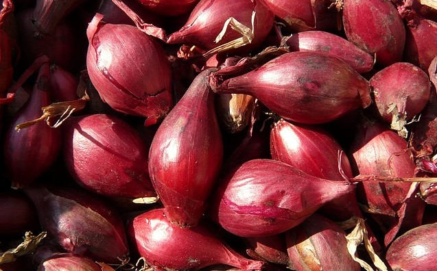
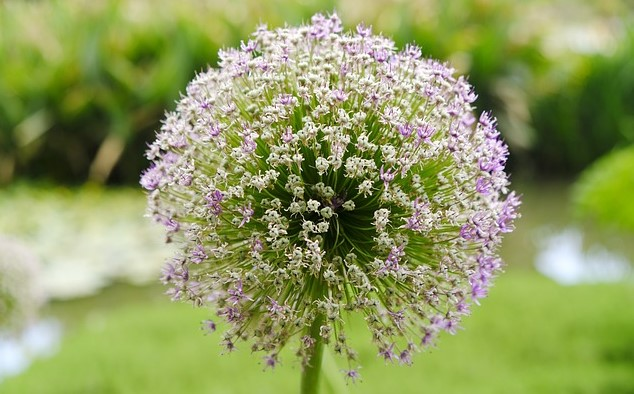

Shallots
Overview
- Allium cepa, Aggregatum cultivar group
- hollow tubular green leaves with a mostly round reddish bulb
- clusters of a few hundred flowers on spindles, usually white in color
- relatively small, up to 60cm tall
- native to central or southwest Asia
- planted in the autumn and harvested in the winter
Shallots are a distant cultivar group of the common yellow onion, and like the onion, the bulb is the part of the plant consumed. Shallots are essentially miniature onion-garlics, and can be consumed whole, sliced, diced, etc. Flavorwise they are simply milder onions in garlic form. Pickled shallots are also a treat for some, and unlike garlic and onions, do not cause bad breath. Shallots are relatively versatile and the only thing to keep in mind is to not refrigerate them, as cold temperatures will actually cause them to sprout.